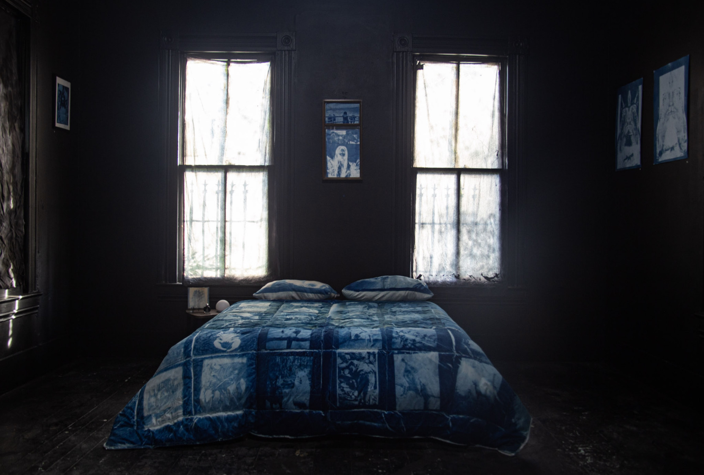
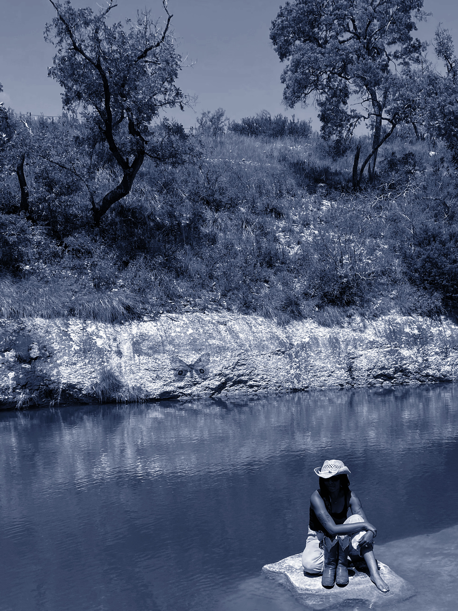
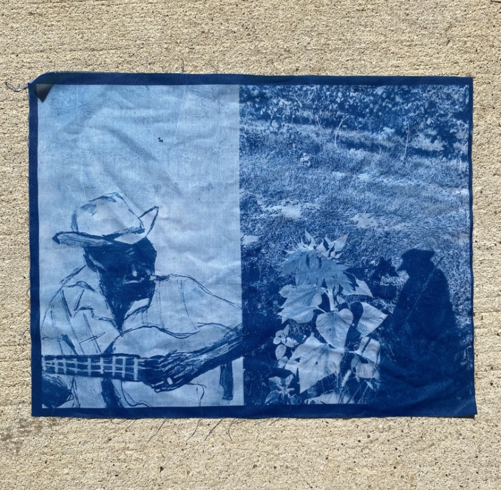
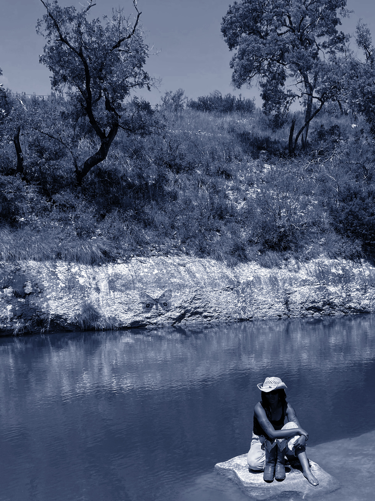
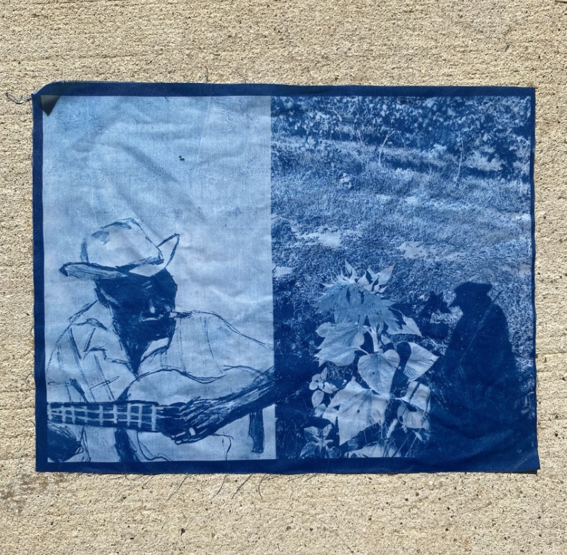
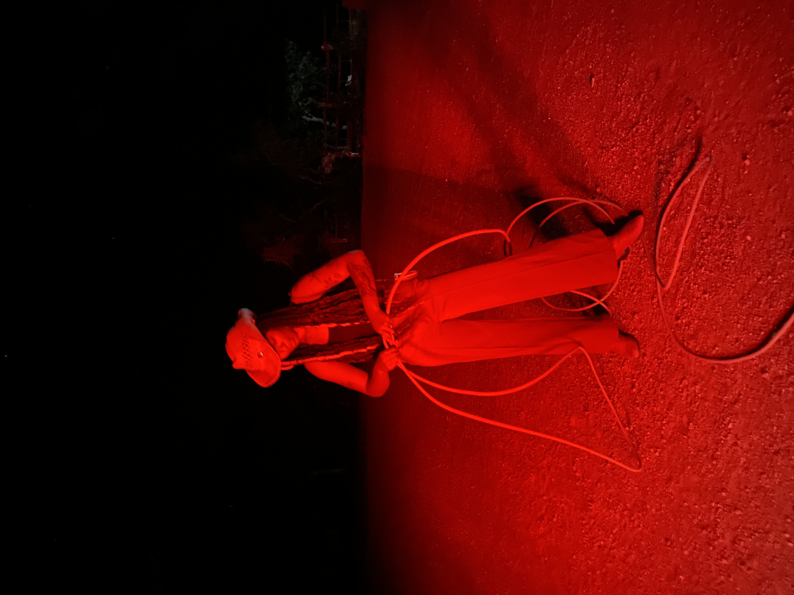
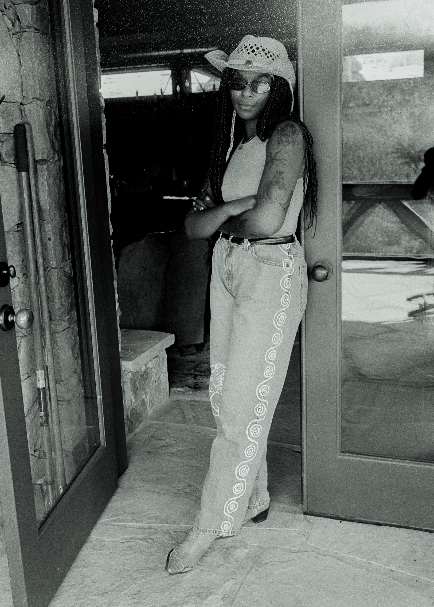
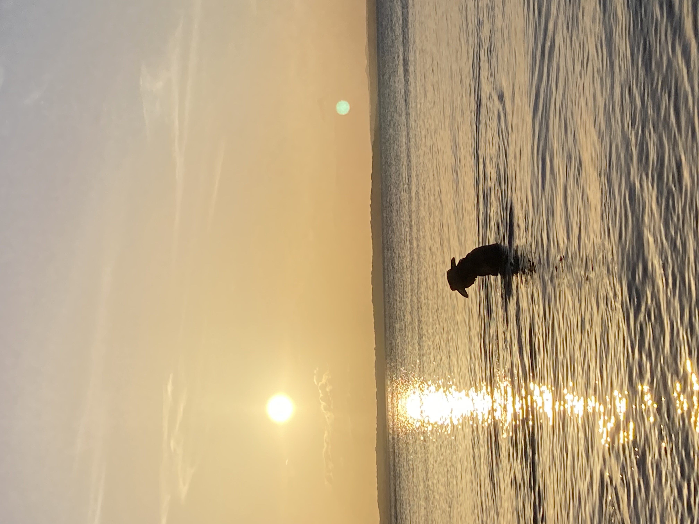
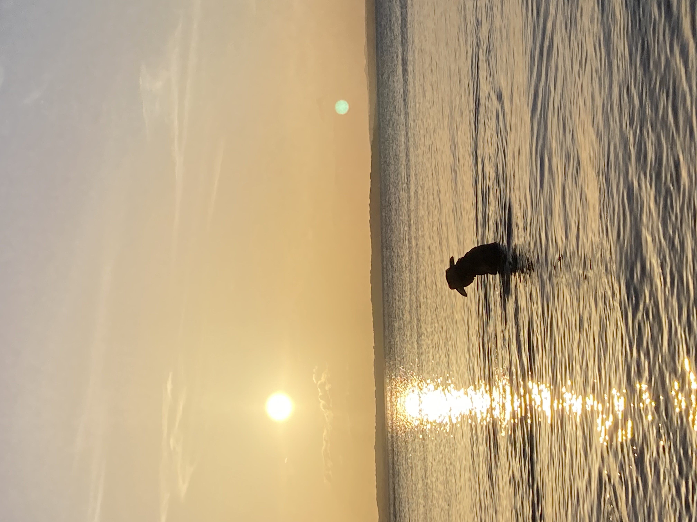

PRAISE FULLER
I grew up in a suburb of the city named Spring where I actually just moved back to a few weeks ago to complete my last semester of college. Besides school, I work at a restaurant in the city and have been there for almost three years. I think having such a healthy workplace environment and supportive management has truly helped me focus a lot more on art because that was always a hurdle in the past. I know in interviews artists always say when asked about the genesis of their practice, “Well I’ve always been a creative person, even as a kid.” And yeah, that’s true but I didn’t get to fully embrace my creativity until I moved out. I grew up in a super academic, Christian household and repressed a lot of creative energy and didn’t fully come out of my shell until after high school. However, I always wrote poems and fiction growing up because those were things I could easily tuck away from strict parents, and I drew a lot in church to keep myself awake. I think more than anything I liked writing. I struggled a lot staying focused on tasks in school, but writing was something that came easily to me and has been a part of myself I’ve been trying to nurture more. Even when it comes down to making cyanotypes, I sometimes jot down a few random sentences that may or may not end up being whole poems to help provide any visuals for a story I’d like to portray on a piece.


I found cyanotypes back in 2018 or 2019. I was doing a lot more graphic design and a little photography around this time for school and just making fliers for shows every now and then but was struggling a lot creatively and (full transparency) was also super depressed. I was researching branches of photography and alternative photographic processes and came across the cyanotype, or blue-print, as some know them as. I was super into Man Ray at the time and knew he coined “rayographs” which I was super fascinated by. I picked up a kid- friendly cyanotype kit where you just put plants and other found objects on the blue paper, set it out in the sun, rinse it, and let it dry. They turned out horribly, but immediately something inside me was born, as cheesy as that sounds. To this day, I don’t use a UV lamp or anything because that kid-like excitement of going out in the sun and printing something feels so playful and much less technical. Waking up on a sunny day is so special knowing it could be a day filled with making art, running in and outside like a kid on summer break with blue stained popsicle fingers. Instead for me, my fingers are stained blue by photoactive chemicals I’m not entirely sure are nontoxic. Another thing I love about the medium is that it’s so mutable and diverse. As a person that can barely stay focused on one thing for too long, this medium is something I can carry with me if I’m feeling like printing on shirts or totes, or if I’m into printing on ceramics, or good ol’ fashion paper. I was able to make an entire bed installation and it was still technically under my “practice” of cyanotypes. It’s such a simple process to learn but allows me to experiment with so many other creative endeavors and make my mark in the beautiful Prussian blue.
 



B. Anele [IG: @surprisinghealthbenefits] approached me back in 2020 about them opening a gallery and wanting me to showcase art in a group show. There was no theme or anything but over the months I did a lot of reading, writing, experimenting, and printmaking to help develop what I guess could now be described as my “style” and thus the show was born. It became a solo exhibition not too long before the show itself and I took this as a sign to really try and hone my craft and creative process. I wanted the first time I would show art in a solo show to be extremely personal, not necessarily too complex but still open to interpretation. B. is a brilliant soul and wonderful friend and they walked me through everything I needed to know and had so much patience with me as we navigated the process of “Is Heaven a Mountain?”. I haven’t shown anywhere else yet. I have a few things that should be coming up soon, but nothing set yet. Honestly just super blessed that after the show, people started reaching out to me. I was worried I had peaked or something else wouldn’t come along for a while but I’m keeping myself busy and I take a moment every day to give gratitude for the direction my life is going.
 
 

Historical context aside, I do think there’s something beautiful to be shared with the relationship between rider and horse, and horses alone are the most ethereal animal
to me. I recently began learning about wild horses and burros and the fight to protect their population from unfair treatment. I think the western imagery I’ve been experimenting with more is mostly to reimagine the original lore that comes with the obsession with western culture painted through a mostly white lens. I’ve gotten the opportunity to spend time in west Texas and experience the life I could possibly see for myself, while also having the space to criticize and analyze the way art out there strongly serves white men. But I’ve mostly allowed myself to feel idealistic for once. Dream of the life I see not just for myself, but many others like me. To be able to share land, experience the beauty of nature alongside nature itself, share experiences and stories rather than currencies and simply riding horseback into a sunset if that’s what you’re into.
Full story in print. Order here.